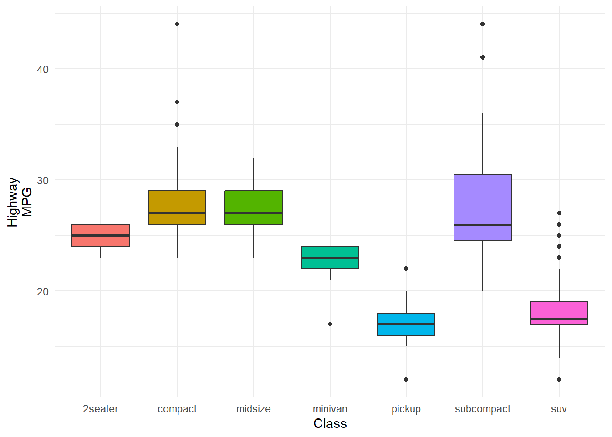
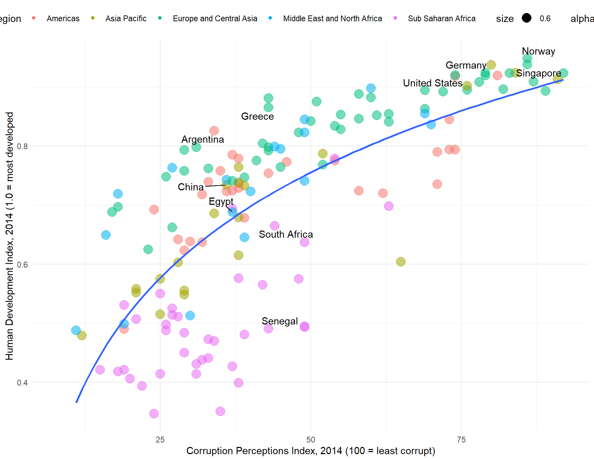
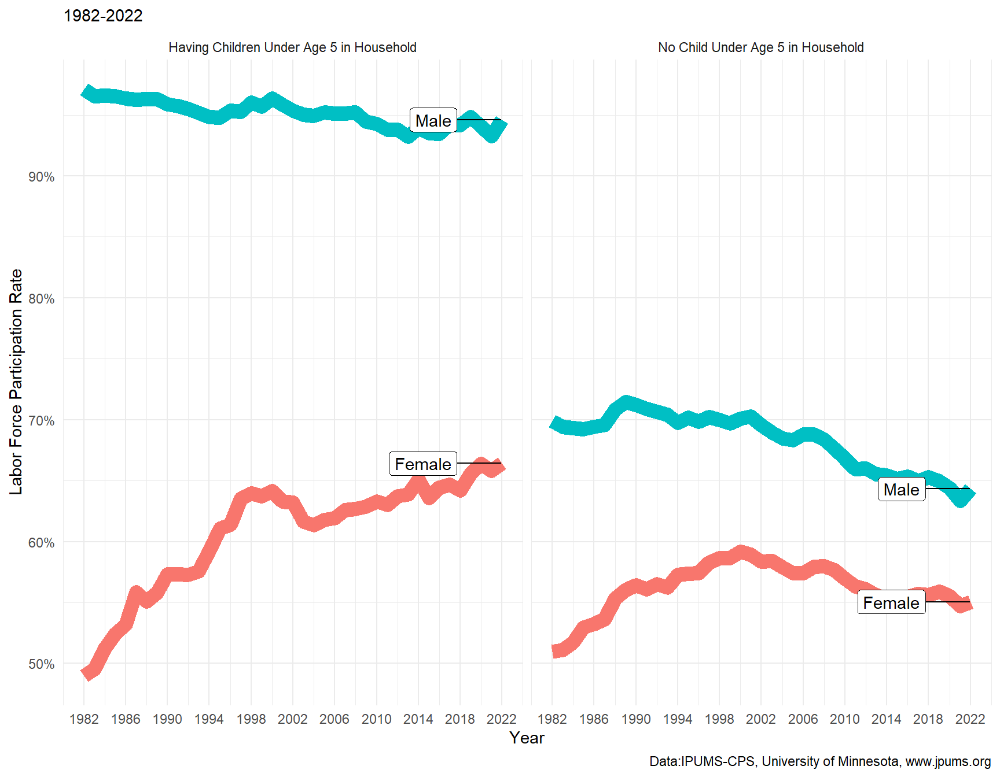
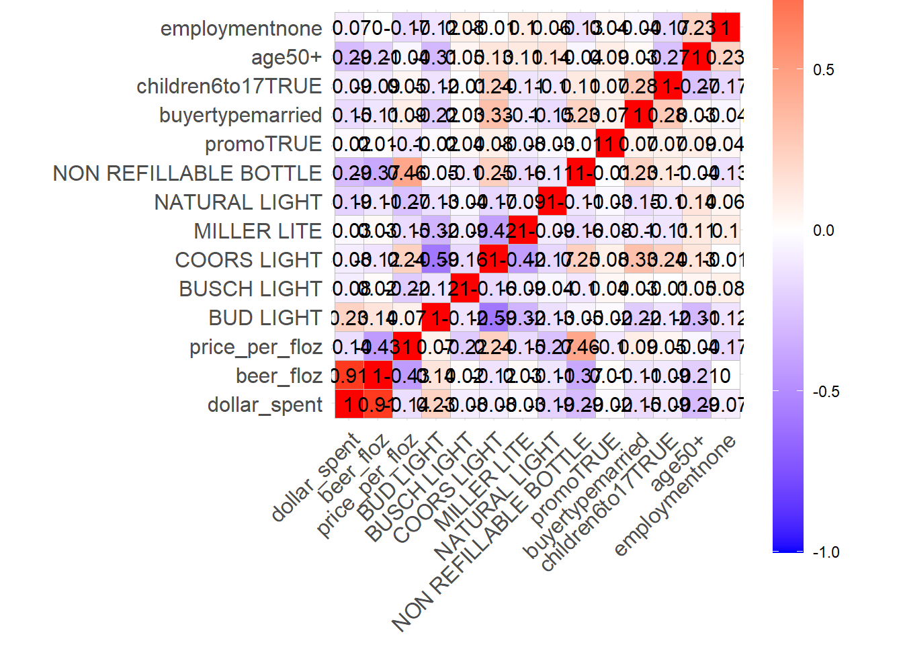

Code
1 + 1[1] 2Project Proposal and Data Visualization
Alexis Kruzicki
March 22, 2024
Add a web-page of the project proposal to your website.
Through surveying the SUNY Geneseo student body, we plan to explore what determines the level of financial literacy among students at SUNY Geneseo. The survey contains questions that address students’ demographics, academic background, family support through college, personal finance experience, and a financial literacy quiz. The sample size is 403 respondents, which is 10% of the population at SUNY Geneseo. We have noticed many students struggling on campus with the basics of personal finance and want to address the growing concern of how this could affect their success through college and in the future. We are interested in how the students’ family or academic background is associated with their financial literacy. Based on this exploration we plan to make some policy and curriculum suggestions on how we can improve the overall understanding of personal finance at SUNY Geneseo. Based on this research we plan to design a curriculum that will be offered to all students through the Geneseo Opportunities for Leadership Development (GOLD) program and will address the largest educational gaps that were identified in the survey. This course will be evaluated by administering the same financial literacy quiz following completion of the course and will offer insight into whether or not there is a substantial change in the students’ personal finance knowledge.
| Name | mpg |
| Number of rows | 234 |
| Number of columns | 11 |
| _______________________ | |
| Column type frequency: | |
| character | 6 |
| numeric | 5 |
| ________________________ | |
| Group variables | None |
Variable type: character
| skim_variable | complete_rate | min | max | empty | n_unique | whitespace |
|---|---|---|---|---|---|---|
| manufacturer | 1 | 4 | 10 | 0 | 15 | 0 |
| model | 1 | 2 | 22 | 0 | 38 | 0 |
| trans | 1 | 8 | 10 | 0 | 10 | 0 |
| drv | 1 | 1 | 1 | 0 | 3 | 0 |
| fl | 1 | 1 | 1 | 0 | 5 | 0 |
| class | 1 | 3 | 10 | 0 | 7 | 0 |
Variable type: numeric
| skim_variable | complete_rate | mean | sd | p0 | p25 | p50 | p75 | p100 | hist |
|---|---|---|---|---|---|---|---|---|---|
| displ | 1 | 3.47 | 1.29 | 1.6 | 2.4 | 3.3 | 4.6 | 7 | ▇▆▆▃▁ |
| year | 1 | 2003.50 | 4.51 | 1999.0 | 1999.0 | 2003.5 | 2008.0 | 2008 | ▇▁▁▁▇ |
| cyl | 1 | 5.89 | 1.61 | 4.0 | 4.0 | 6.0 | 8.0 | 8 | ▇▁▇▁▇ |
| cty | 1 | 16.86 | 4.26 | 9.0 | 14.0 | 17.0 | 19.0 | 35 | ▆▇▃▁▁ |
| hwy | 1 | 23.44 | 5.95 | 12.0 | 18.0 | 24.0 | 27.0 | 44 | ▅▅▇▁▁ |
The following boxplot shows how the distribution of highway MPG (hwy) varies by a type of cars (class) :blue_car: :truck: :minibus:.

Provide ggplot codes to replicate the given figures in Q2a, Q2b, and Q2c.
Below is the data.frame for Q2a:
Rows: 704 Columns: 5
── Column specification ────────────────────────────────────────────────────────
Delimiter: ","
chr (2): country, region
dbl (3): year, cpi, hdi
ℹ Use `spec()` to retrieve the full column specification for this data.
ℹ Specify the column types or set `show_col_types = FALSE` to quiet this message.Answer:
country_list<- c("Argentina", "China", "Egypt", "Greece", "South Africa", "United States", "Germany", "Singapore", "Norway", "Senegal")
hdi_corruption <- hdi_corruption |>
filter(year == 2014) |>
mutate(country = ifelse(country %in% country_list, country, ""))
c <-ggplot(hdi_corruption, aes(x=cpi, y=hdi))+ geom_point((aes(color = region, size = 0.6, alpha = 0.5)))+
geom_smooth(se=FALSE, formula = y ~ log(x), method = lm)+
theme(legend.position = "top")+
geom_text_repel(aes(label = country)) +
labs(color = "Region", x = "Corruption Perceptions Index, 2014 (100 = least corrupt)", y = "Human Development Index, 2014 (1.0 = most developed" )
plot(c)Warning: Removed 24 rows containing non-finite values (`stat_smooth()`).Warning: Removed 24 rows containing missing values (`geom_point()`).Warning: Removed 24 rows containing missing values (`geom_text_repel()`).
Download the file labor_supply.zip from the Google Drive. Then, extract labor_supply.zip, so that you can access the labor_supply.csv file.
Variable description in labor_supply.csv
SEX: 1 if Male; 2 if Female; 9 if NIU (Not in universe)NCHLT5: Number of own children under age 5 in a household; 9 if 9+LABFORCE: 0 if NIU or members of the armed forces; 1 if not in the labor force; 2 if in the labor force.ASECWT: sample weightA sample weight of each observation means how much population each observation represents.
ASECWT for each year, you get the size of yearly population in the US.Households with LABFORCE == 0 is not in labor force.
Labor force participation rate can be calculated by:
\[ (\text{Labor Force Participation Rate}) \, = \, \frac{(\text{Size of population in labor force})}{(\text{Size of civilian population that are not members of the armed force})} \]
Answer:
Rows: 7038907 Columns: 5
── Column specification ────────────────────────────────────────────────────────
Delimiter: ","
dbl (5): YEAR, ASECWT, SEX, LABFORCE, NCHLT5
ℹ Use `spec()` to retrieve the full column specification for this data.
ℹ Specify the column types or set `show_col_types = FALSE` to quiet this message.b <- b |>
filter(LABFORCE != 0)
b$has_children <- ifelse(b$NCHLT5 == 0, "No Child Under Age 5 in Household", "Having Children Under Age 5 in Household")
b$in_labor_force <- ifelse(b$LABFORCE == 2, 1, 0)
b$SEX <- ifelse(b$SEX == 1, "Male", "Female")
b_sum <- b |>
group_by(has_children, SEX, YEAR)|>
summarise(LPR = (sum(ASECWT * in_labor_force))/sum(ASECWT) ) |>
mutate(has_children = factor(has_children,
levels = c("Having Children Under Age 5 in Household", "No Child Under Age 5 in Household")))`summarise()` has grouped output by 'has_children', 'SEX'. You can override
using the `.groups` argument.b_sum_2022 <- b_sum |>
filter(YEAR == 2022)
b_graph <- ggplot(b_sum, aes(x= YEAR, y= LPR))+
geom_line(show.legend = FALSE, aes(color= factor(SEX), size= 1))+
geom_label_repel(data = b_sum_2022, aes(label = as.character(SEX)), box.padding = 2)+
scale_x_continuous(breaks = seq(1982, 2022, 4))+
scale_y_continuous(labels = scales::percent)+
facet_wrap(has_children ~.)+
labs( x= "Year", y= "Labor Force Participation Rate", Title = "Fertility and Labor Supply in the U.S.", subtitle= "1982-2022", caption= "Data:IPUMS-CPS, University of Minnesota, www.jpums.org" )Warning: Using `size` aesthetic for lines was deprecated in ggplot2 3.4.0.
ℹ Please use `linewidth` instead.
Below is the data.frame for Q2c:
Rows: 73115 Columns: 24
── Column specification ────────────────────────────────────────────────────────
Delimiter: ","
chr (13): _purchase_desc, brand, container, market, buyertype, income, age, ...
dbl (5): hh, quantity, dollar_spent, beer_floz, price_per_floz
lgl (6): promo, childrenUnder6, children6to17, microwave, dishwasher, singl...
ℹ Use `spec()` to retrieve the full column specification for this data.
ℹ Specify the column types or set `show_col_types = FALSE` to quiet this message.promo-related.beer_dummies:beer_dummies <- beer_mkt %>% select(-hh, -market)
reg <- lm(data = beer_dummies,
beer_floz ~ .)
beer_dummies <- as.data.frame(model.matrix(reg))[, -1]
beer_dummies <- cbind(beer_mkt$beer_floz ,beer_dummies)
beer_dummies <- beer_dummies %>%
rename(beer_floz = `beer_mkt$beer_floz`)
colnames(beer_dummies)
colnames(beer_1)
beer_1 <- beer_dummies |>
select(dollar_spent, beer_floz, price_per_floz, `brandBUSCH LIGHT`, `brandCOORS LIGHT`, `brandMILLER LITE`, `brandNATURAL LIGHT`, `containerNON REFILLABLE BOTTLE`, promoTRUE, buyertypemarried, children6to17TRUE, `age50+`, employmentnone) |>
mutate(`BUD LIGHT` = ifelse(`brandBUSCH LIGHT`+ `brandCOORS LIGHT`+ `brandMILLER LITE`+ `brandNATURAL LIGHT`== 0, 1, 0) )|>
rename(`BUSCH LIGHT`=`brandBUSCH LIGHT`,
`COORS LIGHT`=`brandCOORS LIGHT`,
`MILLER LITE`=`brandMILLER LITE`,
`NATURAL LIGHT`=`brandNATURAL LIGHT`,
`NON REFILLABLE BOTTLE`= `containerNON REFILLABLE BOTTLE`) |>
relocate(dollar_spent, beer_floz, price_per_floz,`BUD LIGHT`, `BUSCH LIGHT`,
`COORS LIGHT`, `MILLER LITE`, `NATURAL LIGHT`, `NON REFILLABLE BOTTLE`,
promoTRUE, buyertypemarried, children6to17TRUE, `age50+`, employmentnone)
corr <- cor(beer_1)
library(ggcorrplot)
ggcorrplot(corr,
lab = TRUE)+
theme(legend.key.height = unit(1, "inch"))To calculate a correlation between numeric variables in data.frame, use cor(data.frame)
Then, make a correlation heat-map for NY markets with the same selection of variables.
market value is either ALBANY, BUFFALO-ROCHESTER, URBAN NY, SUBURBAN NY, EXURBAN NY, RURAL NEW YORK, or SYRACUSE.Answer:
beer_dummies <- beer_mkt |>
filter(market %in% c("ALBANY", "BUFFALO-ROCHESTER", "URBAN NY", "SUBURBAN NY", "EXURBAN NY", "RURAL NEW YORK", "SYRACUSE") ) |>
select(-hh, -market)
reg <- lm(data = beer_dummies,
beer_floz ~ .)
beer_mkt_NY <- beer_mkt |>
filter(market %in% c("ALBANY", "BUFFALO-ROCHESTER", "URBAN NY", "SUBURBAN NY", "EXURBAN NY", "RURAL NEW YORK", "SYRACUSE") )
beer_dummies <- as.data.frame(model.matrix(reg))[, -1]
beer_dummies <- cbind(beer_mkt_NY$beer_floz ,beer_dummies)
beer_dummies <- beer_dummies %>%
rename(beer_floz = `beer_mkt_NY$beer_floz`)
beer_1 <- beer_dummies |>
select(dollar_spent, beer_floz, price_per_floz, `brandBUSCH LIGHT`, `brandCOORS LIGHT`, `brandMILLER LITE`, `brandNATURAL LIGHT`, `containerNON REFILLABLE BOTTLE`, promoTRUE, buyertypemarried, children6to17TRUE, `age50+`, employmentnone) |>
mutate(`BUD LIGHT` = ifelse(`brandBUSCH LIGHT`+ `brandCOORS LIGHT`+ `brandMILLER LITE`+ `brandNATURAL LIGHT`== 0, 1, 0) )|>
rename(`BUSCH LIGHT`=`brandBUSCH LIGHT`,
`COORS LIGHT`=`brandCOORS LIGHT`,
`MILLER LITE`=`brandMILLER LITE`,
`NATURAL LIGHT`=`brandNATURAL LIGHT`,
`NON REFILLABLE BOTTLE`= `containerNON REFILLABLE BOTTLE`) |>
relocate(dollar_spent, beer_floz, price_per_floz,`BUD LIGHT`, `BUSCH LIGHT`,
`COORS LIGHT`, `MILLER LITE`, `NATURAL LIGHT`, `NON REFILLABLE BOTTLE`,
promoTRUE, buyertypemarried, children6to17TRUE, `age50+`, employmentnone)
corr <- cor(beer_1)
ggcorrplot(corr,
lab = TRUE)+
theme(legend.key.height = unit(1, "inch"))
---
title: Data Visualizaiton 2
subtitle: Project Proposal and Data Visualization
author: Alexis Kruzicki
date: 3/22/2024
categories: [ code, data-visualization]
---
```{r setup}
#| include: false
library(tidyverse)
library(gapminder)
library(skimr) # a better summary of data.frame
library(scales) # scales for ggplot
library(ggthemes) # additional ggplot themes
library(hrbrthemes) # additional ggplot themes and color pallets
library(lubridate)
library(ggridges)
library(ggrepel)
library(tidyverse)
library(ggfortify) # to create regression-related plots
library(ggcorrplot) # to create correlation heatmaps
library(fastDummies) # to create dummy variables
theme_set(theme_minimal()) # setting the minimal theme for ggplot
```
# Question 1
Add a web-page of the project proposal to your website.
# Abstract
Through surveying the SUNY Geneseo student body, we plan to explore what determines the level of financial literacy among students at SUNY Geneseo. The survey contains questions that address students’ demographics, academic background, family support through college, personal finance experience, and a financial literacy quiz. The sample size is 403 respondents, which is 10% of the population at SUNY Geneseo. We have noticed many students struggling on campus with the basics of personal finance and want to address the growing concern of how this could affect their success through college and in the future. We are interested in how the students' family or academic background is associated with their financial literacy. Based on this exploration we plan to make some policy and curriculum suggestions on how we can improve the overall understanding of personal finance at SUNY Geneseo. Based on this research we plan to design a curriculum that will be offered to all students through the Geneseo Opportunities for Leadership Development (GOLD) program and will address the largest educational gaps that were identified in the survey. This course will be evaluated by administering the same financial literacy quiz following completion of the course and will offer insight into whether or not there is a substantial change in the students' personal finance knowledge.
```{r}
1 + 1
```
# Data
## Summary Statistics
```{r}
mpg <- ggplot2::mpg
```
```{r}
#| results: asis
#| echo: false
rmarkdown::paged_table(mpg)
```
```{r}
skim(mpg) %>%
select(-n_missing)
```
## MPG and a Type of Cars
The following boxplot shows how the distribution of highway MPG (`hwy`) varies by a type of cars (`class`) :blue_car: :truck: :minibus:.
```{r}
ggplot(data = mpg) +
geom_boxplot(aes(x = class, y = hwy, fill = class),
show.legend = F) +
labs(x = "Class", y = "Highway\nMPG")
```
<br><br>
# Question 2
Provide ggplot codes to replicate the given figures in Q2a, Q2b, and Q2c.
## Q2a.
Below is the data.frame for Q2a:
```{r}
hdi_corruption <- read_csv(
'https://bcdanl.github.io/data/hdi_corruption.csv')
```
*Answer*:
```{r hdi}
#| fig-width: 9
#| fig-height: 7
country_list<- c("Argentina", "China", "Egypt", "Greece", "South Africa", "United States", "Germany", "Singapore", "Norway", "Senegal")
hdi_corruption <- hdi_corruption |>
filter(year == 2014) |>
mutate(country = ifelse(country %in% country_list, country, ""))
c <-ggplot(hdi_corruption, aes(x=cpi, y=hdi))+ geom_point((aes(color = region, size = 0.6, alpha = 0.5)))+
geom_smooth(se=FALSE, formula = y ~ log(x), method = lm)+
theme(legend.position = "top")+
geom_text_repel(aes(label = country)) +
labs(color = "Region", x = "Corruption Perceptions Index, 2014 (100 = least corrupt)", y = "Human Development Index, 2014 (1.0 = most developed" )
plot(c)
# problems:points larger and slightly transparent,
```
<br><br>
## Q2b
- Download the file `labor_supply.zip` from the Google Drive. Then, extract `labor_supply.zip`, so that you can access the `labor_supply.csv` file.
- Variable description in `labor_supply.csv`
- `SEX`: 1 if Male; 2 if Female; 9 if NIU (Not in universe)
- `NCHLT5`: Number of own children under age 5 in a household; 9 if 9+
- `LABFORCE`: 0 if NIU or members of the armed forces; 1 if not in the labor force; 2 if in the labor force.
- `ASECWT`: sample weight
- A sample weight of each observation means how much population each observation represents.
- If you sum `ASECWT` for each year, you get the size of yearly population in the US.
- Households with `LABFORCE == 0` is not in labor force.
- Labor force participation rate can be calculated by:
$$
(\text{Labor Force Participation Rate}) \, = \, \frac{(\text{Size of population in labor force})}{(\text{Size of civilian population that are not members of the armed force})}
$$
*Answer*:
```{r labor-supply}
#| fig-width: 9
#| fig-height: 7
b<- read_csv("C:/Users/Alexis Kruzicki/OneDrive/Documents/2023-24/DANL_399/labor_supply (1)/labor_supply.csv")
b <- b |>
filter(LABFORCE != 0)
b$has_children <- ifelse(b$NCHLT5 == 0, "No Child Under Age 5 in Household", "Having Children Under Age 5 in Household")
b$in_labor_force <- ifelse(b$LABFORCE == 2, 1, 0)
b$SEX <- ifelse(b$SEX == 1, "Male", "Female")
b_sum <- b |>
group_by(has_children, SEX, YEAR)|>
summarise(LPR = (sum(ASECWT * in_labor_force))/sum(ASECWT) ) |>
mutate(has_children = factor(has_children,
levels = c("Having Children Under Age 5 in Household", "No Child Under Age 5 in Household")))
b_sum_2022 <- b_sum |>
filter(YEAR == 2022)
b_graph <- ggplot(b_sum, aes(x= YEAR, y= LPR))+
geom_line(show.legend = FALSE, aes(color= factor(SEX), size= 1))+
geom_label_repel(data = b_sum_2022, aes(label = as.character(SEX)), box.padding = 2)+
scale_x_continuous(breaks = seq(1982, 2022, 4))+
scale_y_continuous(labels = scales::percent)+
facet_wrap(has_children ~.)+
labs( x= "Year", y= "Labor Force Participation Rate", Title = "Fertility and Labor Supply in the U.S.", subtitle= "1982-2022", caption= "Data:IPUMS-CPS, University of Minnesota, www.jpums.org" )
b_graph
```
<br><br>
## Q2c
Below is the data.frame for Q2c:
```{r}
#| echo: true
#| eval: true
# install.packages("ggcorrplot")
library(ggcorrplot) # to create correlation heatmaps using ggcorrplot()
beer_mkt <- read_csv('https://bcdanl.github.io/data/beer_markets.csv')
```
- Make a correlation heat-map with variables that are either strongly correlated or `promo`-related.
- The variables are selected by how high the mean value of the absolute value of correlations with the variable is (top 13-15 variables).
- You can start with the data.frame, `beer_dummies`:
```{r}
#| echo: true
#| eval: false
#| fig-height: 8
#| fig-width: 8
beer_dummies <- beer_mkt %>% select(-hh, -market)
reg <- lm(data = beer_dummies,
beer_floz ~ .)
beer_dummies <- as.data.frame(model.matrix(reg))[, -1]
beer_dummies <- cbind(beer_mkt$beer_floz ,beer_dummies)
beer_dummies <- beer_dummies %>%
rename(beer_floz = `beer_mkt$beer_floz`)
colnames(beer_dummies)
colnames(beer_1)
beer_1 <- beer_dummies |>
select(dollar_spent, beer_floz, price_per_floz, `brandBUSCH LIGHT`, `brandCOORS LIGHT`, `brandMILLER LITE`, `brandNATURAL LIGHT`, `containerNON REFILLABLE BOTTLE`, promoTRUE, buyertypemarried, children6to17TRUE, `age50+`, employmentnone) |>
mutate(`BUD LIGHT` = ifelse(`brandBUSCH LIGHT`+ `brandCOORS LIGHT`+ `brandMILLER LITE`+ `brandNATURAL LIGHT`== 0, 1, 0) )|>
rename(`BUSCH LIGHT`=`brandBUSCH LIGHT`,
`COORS LIGHT`=`brandCOORS LIGHT`,
`MILLER LITE`=`brandMILLER LITE`,
`NATURAL LIGHT`=`brandNATURAL LIGHT`,
`NON REFILLABLE BOTTLE`= `containerNON REFILLABLE BOTTLE`) |>
relocate(dollar_spent, beer_floz, price_per_floz,`BUD LIGHT`, `BUSCH LIGHT`,
`COORS LIGHT`, `MILLER LITE`, `NATURAL LIGHT`, `NON REFILLABLE BOTTLE`,
promoTRUE, buyertypemarried, children6to17TRUE, `age50+`, employmentnone)
corr <- cor(beer_1)
library(ggcorrplot)
ggcorrplot(corr,
lab = TRUE)+
theme(legend.key.height = unit(1, "inch"))
```
- To calculate a correlation between numeric variables in `data.frame`, use `cor(data.frame)`
- Then, make a correlation heat-map for NY markets with the same selection of variables.
- NY markets are such that whose `market` value is either `ALBANY`, `BUFFALO-ROCHESTER`, `URBAN NY`, `SUBURBAN NY`, `EXURBAN NY`, `RURAL NEW YORK`, or `SYRACUSE`.
*Answer*:
```{r}
beer_dummies <- beer_mkt |>
filter(market %in% c("ALBANY", "BUFFALO-ROCHESTER", "URBAN NY", "SUBURBAN NY", "EXURBAN NY", "RURAL NEW YORK", "SYRACUSE") ) |>
select(-hh, -market)
reg <- lm(data = beer_dummies,
beer_floz ~ .)
beer_mkt_NY <- beer_mkt |>
filter(market %in% c("ALBANY", "BUFFALO-ROCHESTER", "URBAN NY", "SUBURBAN NY", "EXURBAN NY", "RURAL NEW YORK", "SYRACUSE") )
beer_dummies <- as.data.frame(model.matrix(reg))[, -1]
beer_dummies <- cbind(beer_mkt_NY$beer_floz ,beer_dummies)
beer_dummies <- beer_dummies %>%
rename(beer_floz = `beer_mkt_NY$beer_floz`)
beer_1 <- beer_dummies |>
select(dollar_spent, beer_floz, price_per_floz, `brandBUSCH LIGHT`, `brandCOORS LIGHT`, `brandMILLER LITE`, `brandNATURAL LIGHT`, `containerNON REFILLABLE BOTTLE`, promoTRUE, buyertypemarried, children6to17TRUE, `age50+`, employmentnone) |>
mutate(`BUD LIGHT` = ifelse(`brandBUSCH LIGHT`+ `brandCOORS LIGHT`+ `brandMILLER LITE`+ `brandNATURAL LIGHT`== 0, 1, 0) )|>
rename(`BUSCH LIGHT`=`brandBUSCH LIGHT`,
`COORS LIGHT`=`brandCOORS LIGHT`,
`MILLER LITE`=`brandMILLER LITE`,
`NATURAL LIGHT`=`brandNATURAL LIGHT`,
`NON REFILLABLE BOTTLE`= `containerNON REFILLABLE BOTTLE`) |>
relocate(dollar_spent, beer_floz, price_per_floz,`BUD LIGHT`, `BUSCH LIGHT`,
`COORS LIGHT`, `MILLER LITE`, `NATURAL LIGHT`, `NON REFILLABLE BOTTLE`,
promoTRUE, buyertypemarried, children6to17TRUE, `age50+`, employmentnone)
corr <- cor(beer_1)
ggcorrplot(corr,
lab = TRUE)+
theme(legend.key.height = unit(1, "inch"))
#color changed, transparent lines- maybe color effect
```
<!-- References: -->
<!-- - [Fundamentals of Data Visualization by Claus O. Wilke](https://clauswilke.com/dataviz) -->
<!-- - [Data Visualization: A practical introduction by Kieran Healy](https://socviz.co) -->